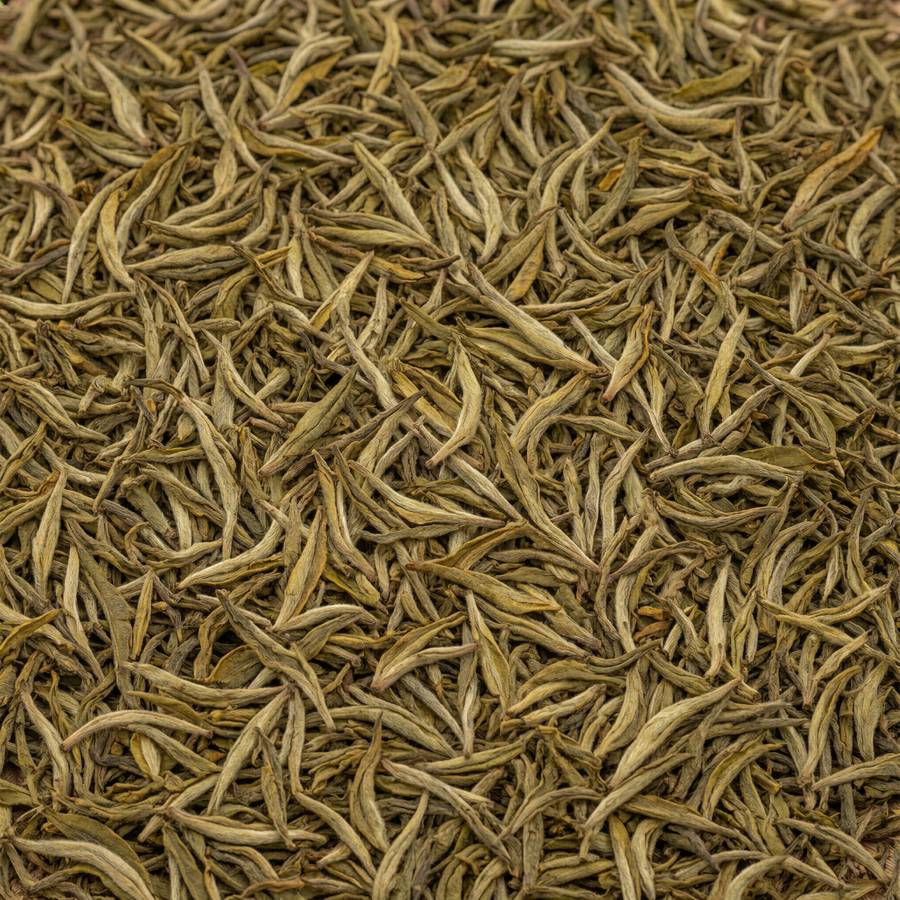
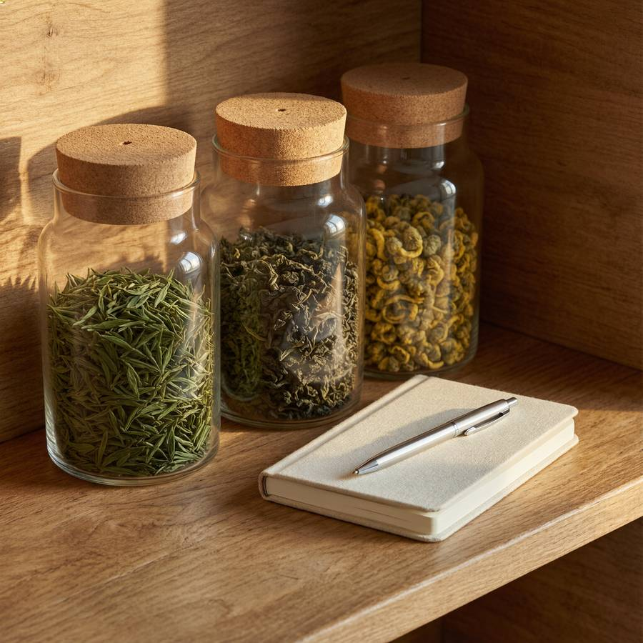

Учёт в один тап
Граммы, пакетики, упаковки. Кнопка «Заварил» сама списывает остаток и пишет запись в журнал.
личный дневник чая
Остатки, журнал завариваний с оценками, список покупок и общий каталог сортов — в одном спокойном месте. Без ленты, магазина и шума.
Граммы, пакетики, упаковки. Кнопка «Заварил» сама списывает остаток и пишет запись в журнал.
Оценка звёздами и заметка о вкусе. Через месяц видно, какой рецепт у вас любимый.
У каждого чая свой порог «мало». Полка сама собирает список и пополняется одной кнопкой.
Десятки сортов с температурой, временем и дозой. Нет вашего — предложите, после модерации его увидят все.
Советы по чаю с учётом вашей полки и журнала: команды «добавь», «заварил», «статистика» и режим YandexGPT.
Заявки на новые сорта проходят проверку, а травяные сборы собираются из отдельных трав.
Регистрация занимает минуту: полка, журнал и заявки привязаны к профилю, записи видите только вы.
Из каталога или вручную — с остатком и порогом «мало». Редкий сорт можно предложить в общий каталог.
Таймер проливов подскажет момент, остатки пересчитаются сами, а заканчивающийся чай тихо ляжет в список покупок.


Это лишь витрина: в полном каталоге — десятки сортов с фото, параметрами заваривания и оценками сообщества. Открыть полный каталог.
В чашке чая — тишина, порядок и немного времени, которое принадлежит только вам.
Кирилл, автор «Чайной полки»
Попробовать бесплатноРегистрация — минута. Без магазина, ленты и уведомительного шума.